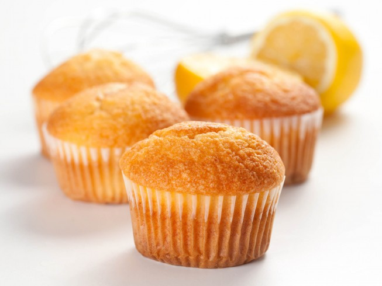

Citronové muffiny
 16
malých muffinů
16
malých muffinů 30
minut
30
minut Sladké
Sladké Kyselé
Kyselé
 1878.89 kalorií
·
792.47 g cukru
·
109.38 g tuku
·
22.73 g proteinu
1878.89 kalorií
·
792.47 g cukru
·
109.38 g tuku
·
22.73 g proteinu
Rychlé a jednoduché, ale opravdu výborné muffiny.

1,¼ hrnkuhladké mouky1 lžičkaprášku do pečiva½ lžičkysoli120 gmásla (měkké)1 hrnekcukru2ksvejce1/2 hrnkumléka1kscitronu (kůra i šťáva)
Ingredience
Troubu předehřejeme na
180°C.
1,¼ hrnkuhladké mouky1 lžičkaprášku do pečiva½ lžičkysoli
V jedné míse smícháme mouku, prášek do pečiva a sůl.
120 gmásla (měkké)1 hrnekcukru2ksvejce1/2 hrnkumléka1kscitronu (kůra i šťáva)
V jiné míse sešleháme máslo a cukr. Pak přidáme vejce. Na konec přidáme směs mouky, mléko, citronovou kůru a šťávu. Vše důkladně promícháme.
Těstem naplníme košíčky a pečeme
20 minut.